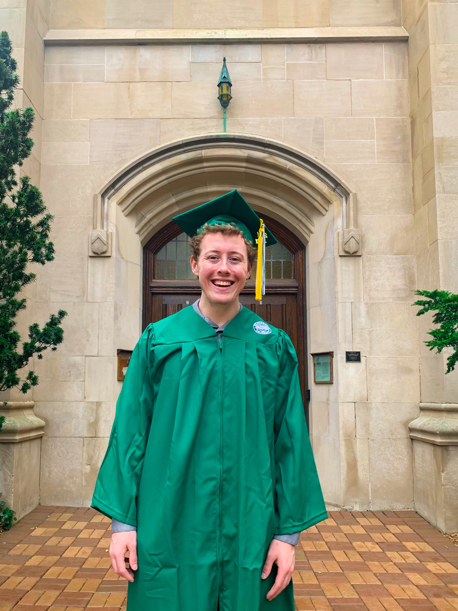
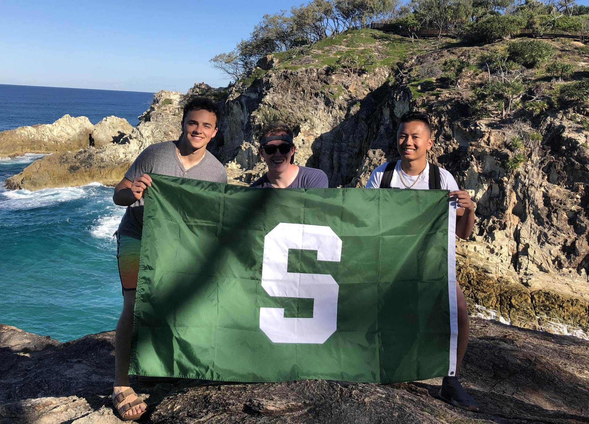
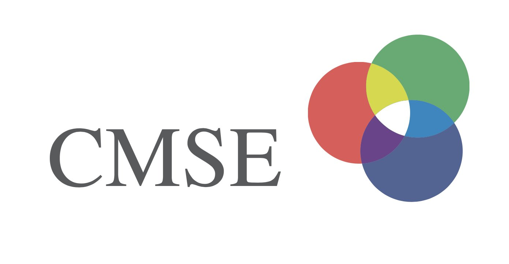
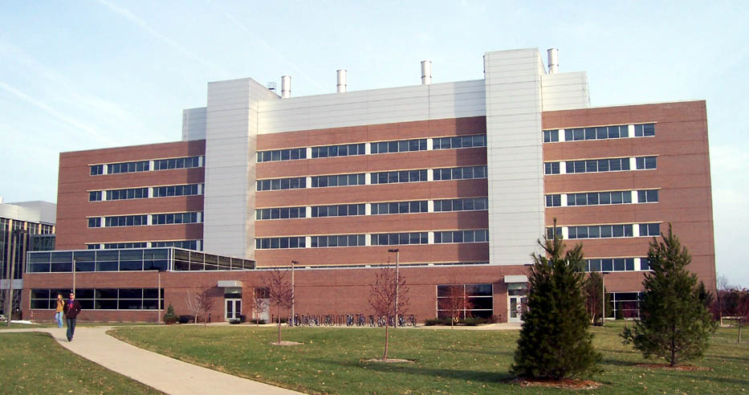
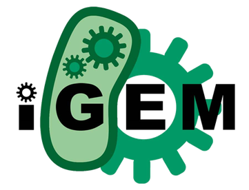

I have a passion a wide array of sciences; including renewable technologies,
biochemistry, AI, statistics, economics, and more!

My collegiate career begain in 2017 at Michigan State University,
where I declared my major in Biochemsitry and Molecular Biology.
After my first year at MSU, I began to look back to high school, and appreciated how much I enjoyed learning about social science. I declared economics as my minor since I truly enjoyed the concepts.
I believe having a basic understanding of fundamental concepts such as opportunity cost and investing in your future, can help guide
day to day choices in your personal life, even if the decision is not strictly financial based.
2019
Study Abroad:
Brisbane Australia

During the 2019 summer I had the amazing opportunity to travel with 22 classmates to Australia. As a group we were exposed to research facilites,
lectured by professors at Queensland University of Technology, and explored the effects of climate change on the local ecology.
My personal research studied overfishing of pufferfish and its effect on the Great Barrier Reef and climate change.

After my first 5 semesters, I decided that an introduction into the coding world would be both challenging yet rewarding,
with the goal acquiring skills that can be applied to many different fields. This is where I decided to add the CMSE minor to my coursework.
This was the beginning of my coding experience, where I first began using python.
Although challenging, the CMSE courses opened a door into the computational
world where the sky is the limit. I have since worked on a few projects using python, including a machine learning image classifier, and a tool for displaying a vehicle's
performance based on user inputs.

While taking introductory physics, I found myself doing an excellent job understanding concepts
and figuring out how to solve the problems we were given. Because of this I reached out to
my instructor, with hopes of helping other students understand the material.
I was lucky enough to land a postition as an undergraduate learning assistant for the second
introductory phsycis course (electricity and magnetism, atomic, nucelar). This was a great postition
for me, since I was able to explain concepts to students in an intuitive way. Hearing them tell me that
my explanations helped them accel in the class, is what really put a smile on my face.

One amazing opportunity I had was being a part of the Michigan State 2021 iGEM team. iGEM teams from all over the world develop and test synthetic biology projects
Our team's project 'Synterception', aimed to prevent horizontal gene transfer (the unwanted spread of synthetic DNA to other organisms).
Our approach included 3 layers; one example is the synthetic plasmid (DNA) having a toxin on it, while another plasmid contains the anti-toxin,
this meant that if the main plasmid ended up in a different cell, the cell would die from the toxin unless the anti-toxin plasmid also ended up in that cell
Where I spent much of my time was in the lab, one experiment I focused on was finding the rate of conjugation (unwanted gene transfer) between donor and recipient cells;
this was performed with different ratios and dilution levels, which would serve as a baseline to any biocontainment methods we may introduce.
2021
Graduation, and a new beginning

After finishing my Biochemistry degree, I wanted to continue my education. I found a unique engineering Master's program at Wayne State University,
Alternative Energy Technology. This program stood out because of my interest and passion for creating a sustainable future. Although some may question
the change from natural science to engineering (myself included), I really do enjoy all types of science, and my degree has exposed me to broad selection of
courses.
Some courses I have taken include: Fundamentals of Fuel Cell Systems, Fundamentals of Alternative Energy Technology, Integrated Product Development, Fundamentals of Electric
Drive Vehicle Engineering, Decision Analysis&Simulation, and Python in Industrial Applications. These courses have exposed me to battery/fuel cell chemistry, types of EVs and their power requirements,
decision tree statistics/analysis, calculating NPV for potential renewable energy projects, and python.
2022
Product Specialist at Apple

While working towards my engineering degree, I had the chance to work at the
Apple store, helping customers make decisions, troubleshoot their needs,
work with the carriers to resolve any issues, etc.
Although this may just be considered a job while I was in school, I really valued the
experience I had; through thousands of interactions,
I became significantly better at working with diverse groups of people with varying needs.
No day was ever the same, sometimes I would spend hours helping less tech savvy individuals
understand their first phone, other times I would help businesses decide which and how many
devices would be necessary.
Overall, what made this job stand out was the positive feedback I would
get after helping people, whether I maneuvered a difficult situation, or
pointed out something that was simply overlooked, I was able to achieve this
by being as efficent and transparent as possible.
2023
Vehicle Controls Engineer & Web Development
.png)
At Dorleco, I have had the opportunity to utilize and expand my software skills. In February 2021, I began as an intern, my initial responsibility was
creating driving scenarios in MATLAB's automated vehicle toolbox, from this I could calculate the specifications/number of sensors required to prevent
a crash when an automated braking system is used.
One of the projects I spent the most time contributing towards, is an application that recommends battery/motor requirments based on calculations
from parameters provided by the user. I have learned how to modify the user interface, control what actions take place when buttons are pressed, modify the
back end python script, and store any user data/preferences into a MongoDB database. I'll link the latest release below.
More recently, I have been trying to improve my skills in Simulink, specifically programming vehicle control units (VCUs) with CAN signals. For example, we have a
test bench that includes a throttle, keypad, and motor, which can all be controlled by the VCU which was flashed with a simulink file.